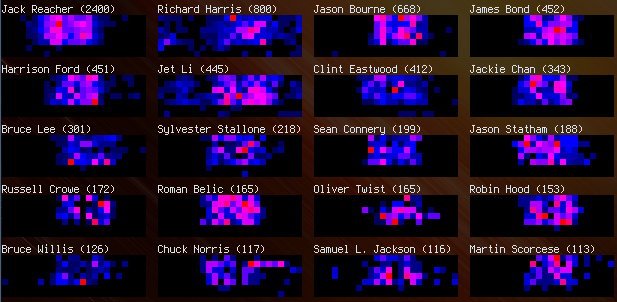

I’ve released a new module to CPAN, ANSI::Heatmap. It makes pretty heatmaps for your console application, like this:

Names changed to protect the innocent
The x-axis is hour (0-23) and the y-axis is day of week (Mon-Sun) of the local git commit time, correcting for timezone.
I wrote a quick Perl script to call git log and process the dates:
#!/usr/bin/perl use strict; use warnings; use ANSI::Heatmap; @ARGV == 2 or die "usage: $0 repo author"; my ($opt_repo, $opt_author) = @ARGV; my $i; my %day2idx = map { $_ => $i++ } qw(Mon Tue Wed Thu Fri Sat Sun); my $map = ANSI::Heatmap->new(min_x => 0, max_x => 23, min_y => 0, max_y => 6, half => 1); chdir $opt_repo; open my $log, '-|', ('git', 'log', '--no-merges', '--remove-empty', '--format=%cD', '--author', $opt_author); while (<$log>) { /\A(\w+), \d+ \w+ \d+ (\d+):\d+:\d+ [+-]\d+\Z/ or die "invalid line '$_'"; my ($day, $hour) = ($1, $2); $day = $day2idx{$day}; defined $day or die "Invalid day"; $map->inc($hour, $day); } binmode STDOUT, ':utf8'; print $map;
For a fancier output, you need to split the heatmaps by line and stack them together horizontally; here is the source.
I’d love to see what other people do with this code!

Comments !